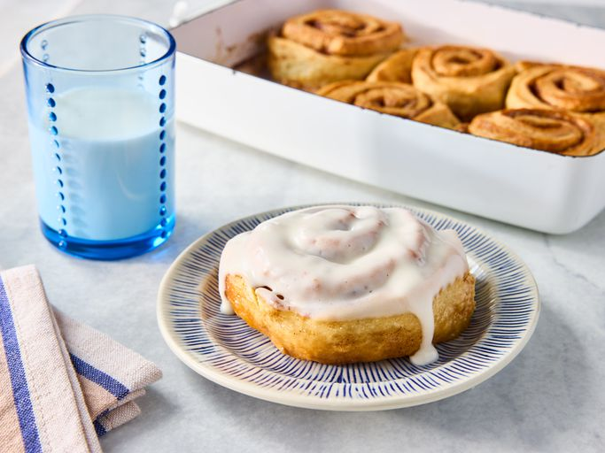

Homepage
Cinnamon Roll Recipe
Cinnamon Roll Recipe

Soft and fluffy cinnamon rolls with a sweet cinnamon filling and a drizzle of icing.
Perfect for breakfast, brunch, or a sweet treat any time of day.
Ingredients
- Pre-made dough or homemade dough
- Butter
- Cinnamon
- Brown sugar
- Powdered sugar (for icing)
- Milk (for icing)
Steps
- Roll out the dough into a rectangle and spread with softened butter.
- Sprinkle a mixture of cinnamon and brown sugar evenly over the dough.
- Roll the dough tightly into a log and cut into individual rolls.
- Place the rolls in a greased baking dish and let rise for 30 minutes.
- Bake at 180°C (350°F) for 20–25 minutes until golden brown.
- Drizzle with icing made from powdered sugar and milk before serving.
Back to Homepage